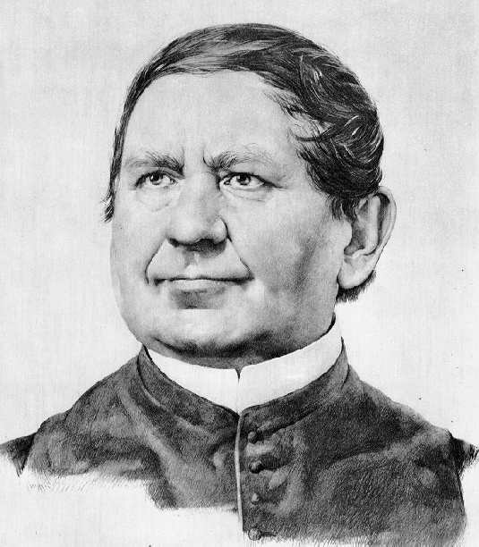
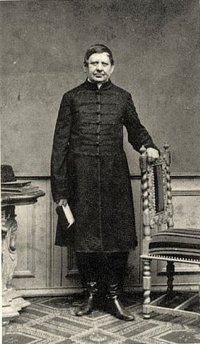

Jedlik Ányos (Szímő, 1800. január 11. – Győr, 1895. december 13.) magyar természettudós, feltaláló, bencés szerzetes, kiváló oktató. Eredeti neve Jedlik István, az Ányos a rendben felvett neve. Hozzá fűződik többek között az első villanymotor megalkotása, az öngerjesztés elve, a dinamóelv első leírása, a szódavíz magyarországi gyártása és a feszültségsokszorozás felismerése.
Az első elektromossággal foglalkozó magyarországi tankönyv már 1746-ban megjelent, de az elektrodinamika kutatása és oktatásának bevezetése is az ő nevéhez köthető. Az elektromos fejlődés hulláma a 19. század negyedik évtizedétől kezdve Magyarországra is elért, jó ideig egyedül Jedlik munkásságával. Fennmaradt írásai alaposabb feldolgozása azt mutatja, hogy a szerény anyagi eszközökkel rendelkező fizikaszertárak csendes munkása nemcsak, hogy lépést tartott az európai haladással, de nem egy dologban meg is előzte azt.
A Magyar Királyságban 1844-ig a latin volt a hivatalos, így minden magasabb fokú oktatási intézményben is az oktatás nyelve. Egyetemi katedrán először – 1845-ben – Jedlik Ányos szólalt meg a „deák” helyett magyarul.
Mi magyarok nem vagyunk olyan gazdagok nagy emberekben, hogy könnyelmű felületességgel elhanyagolhatnók őket. Kell, hogy emléküket tiszteljük, hagyatékukat szerető gonddal őrizzük. Az angoloknak nagyjaik számára megvan a Westminster Apátságuk, a franciáknak a Pantheonjuk. Mi csak szellemünkben tudunk pantheont készíteni nagy íróink, politikusaink, tudósaink emlékének. Ezek sorába kell, hogy méltó hely jusson Jedlik Ányosnak, a múlt évszázad csendben, önzetlenül dolgozó tudósának is.
Jedlik Ányos 1800. január 11-én született Szímőn, földműves szülők gyermekeként. Tehetsége miatt édesapja támogatta tanulmányait. A nagyszombati, majd pozsonyi bencés gimnáziumban tanult, itt három nyelvet sajátított el. Tanárai közül Gácser Leó volt rá nagy hatással, aki miatt a bencés rendbe lépett Pannonhalmán. Itt vette fel az Anianus, magyarosan Ányos nevet.
A győri líceumban bölcsészeti tanulmányokat végzett, majd a pesti egyetemen doktori címet szerzett matematikából, fizikából, filozófiából és történelemből. 1825-ben pappá szentelték, majd a győri gimnáziumban és líceumban tanított. Később a Pozsonyi Királyi Akadémián, majd 1840-től a pesti egyetem fizika tanszékének vezetője lett.
Kutatásai során az elektromosságra összpontosított. Az 1832–36-os országgyűlés hatására magyar nyelvű tankönyvet készített, és aktívan részt vett a magyar műszaki nyelv kialakításában. Több tudományos kifejezést alkotott meg, például: dugattyú, tehetetlenségi nyomaték, hullámhossz, légnyomás.
1846-tól az egyetem bölcsészkarának dékánja lett. Az 1848-as forradalom után nemzetőrként szolgált, majd a szabadságharc leverése után csak német nyelven taníthatott. Tankönyveket írt, köztük a „Súlyos testek természettana” című munkát.
1863-ban az egyetem rektorává választották. Később visszavonult a győri rendházba, de kutatásait folytatta. 1895-ben, közel 96 évesen hunyt el. Földi maradványait több alkalommal exhumálták, végső nyughelye díszsírhely lett.
Munkásságát rendíthetetlen szorgalom, hazaszeretet és tudományos elhivatottság jellemezte. Halála előtt így nyilatkozott: „Hová kellene lennünk, ha az Isten a munkára való képességet megvonná tőlünk.”
A "villamdelejes önforgony", az elektromotor őse. Megtalálható benne a mai egyenáramú motor mindhárom alapvető eleme: a tekercselt állórész, a tekercselt forgórész és a kommutátor. Találmányát sajnos nem publikálta, ezért a világ más feltalálók későbbi, tőle független alkotásait ismerte meg.